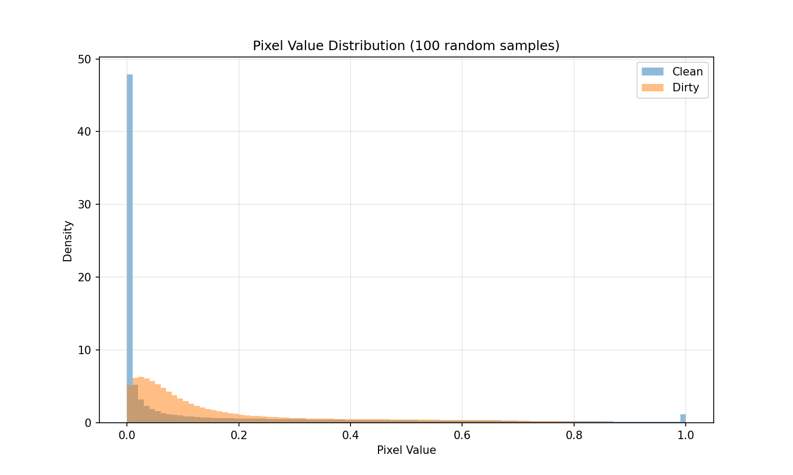
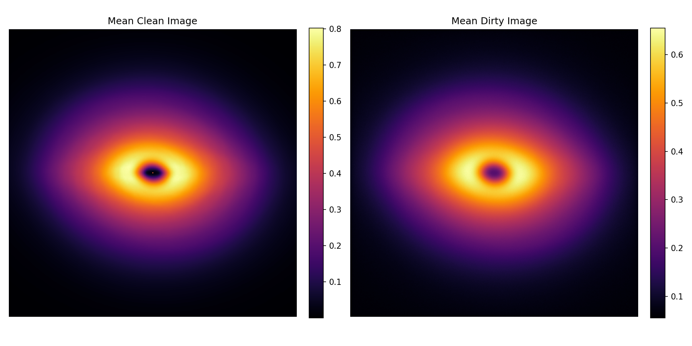

Denoising Astronomical Observations of Protoplanetary Disks
A Machine Learning Pipeline for Noise Reduction Using Deep Learning
Krishan Yadav
Google Summer of Code 2026 -- ML4Sci
Mentors: Jason Terry and Gaurav Shukla
Date: June 2026
Why Denoising Matters
- ALMA and VLT telescopes produce high-resolution protoplanetary disk observations, but data contains significant noise from atmospheric interference, instrumental limitations, and observational constraints.
- This noise obscures subtle disk structures such as rings, gaps, and spiral arms that are signatures of forming planets.
- Terry et al. (2022) showed that planet-induced kinematic kinks become essentially invisible in noisy convolved channel maps -- better denoising directly improves planet detection accuracy.
Better denoising = better planet detection
Project Approach
Noisy ALMA
Observation
->
Preprocessing &
Augmentation
->
ML Denoising
Model
->
Clean Denoised
Image
->
Planet
Detection
Our work sits between raw observation and scientific analysis
Models under evaluation:
- Convolutional Autoencoder
- U-Net
- Diffusion Model (DDPM)
Dataset: Synthetic Observations
| Statistic |
clean.npy (Ground Truth) |
dirty.npy (Noisy Input) |
| Number of samples |
975 |
975 |
| Image size |
600 x 600 |
600 x 600 |
| dtype |
float32 |
float64 (cast to float32) |
| Value range |
[0.0, 1.0] |
[0.0, 1.0] |
| Memory usage |
~1.4 GB |
~2.8 GB |
Key note: Paired supervised dataset -- every dirty image has a corresponding clean ground truth.
Source note: Generated from PHANTOM SPH hydrodynamic simulations + MCFOST radiative transfer (same pipeline as Terry et al. 2022)
Sample Clean / Dirty Pairs
Left: Clean ground truth. Right: Noisy observation. Colormap: inferno.
Noise obscures ring and gap structures critical for planet detection.
Pixel Distribution and Mean Images

Pixel value distributions -- dirty data has broader spread due to noise

Mean clean image shows clear disk structure.
Mean dirty image shows noise smoothing out fine features.
Classical Denoising Baselines
From left to right: Clean ground truth, Noisy input, Gaussian sigma2, Median 3x3, Wiener filter, Difference map
Note: Classical filters smooth uniformly and cannot preserve fine disk substructures.
Baseline Performance -- Classical Methods
| Method |
PSNR (dB) |
SSIM |
MSE |
| Noisy Input |
21.66 |
0.2358 |
0.009048 |
| Gaussian sigma1 |
22.86 |
0.4771 |
0.006917 |
| Gaussian sigma2 |
22.92 |
0.5214 |
0.006806 |
| Median 3x3 |
22.93 |
0.4358 |
0.006921 |
| Wiener |
22.69 |
0.4151 |
0.007186 |
Classical methods improve PSNR by only ~1.3 dB and SSIM by ~0.28.
Our ML target is significantly higher.
ML Model 1: Convolutional Autoencoder
Architecture Description
- Encoder: Input (1ch) → Conv Block 32ch → Conv Block 64ch → Conv Block 128ch
- Bottleneck: 256 channels
- Decoder: 128ch → 64ch → 32ch → Output (1ch, Sigmoid)
- Skip connections: None (pure autoencoder)
Key Specifications
- Total parameters: 1,734,305
- Input: 64x64 patches
- Loss function: MSE
- Optimizer: Adam (lr=1e-3)
- Hardware: NVIDIA RTX 2050 (4GB VRAM)
Autoencoder Training -- In Progress
| Epoch |
Train MSE |
Val MSE |
| 1 | 0.0451 | 0.0268 |
| 2 | 0.0193 | 0.0136 |
| 3 | 0.0173 | 0.0231 |
| 4 | 0.0178 | 0.0106 |
| 5 | 0.0146 | 0.0131 |
Status: Training in progress -- 30 epochs
Loss is decreasing steadily -- model is learning to reconstruct clean disk structures from noisy inputs
GSoC 2026 Timeline
- Week 1 (May 25): Community bonding, setup -- COMPLETED
- Week 2 (June 2–8): Dataset exploration, baselines, autoencoder -- IN PROGRESS
- Week 3 (June 9–15): Complete autoencoder, implement U-Net -- UPCOMING
- Week 4 (June 16–22): U-Net evaluation, start diffusion model -- UPCOMING
- Week 5 (June 23–29): Complete diffusion model, full comparison -- UPCOMING
- Midterm (July 6–10): Working pipeline, all models benchmarked -- TARGET
Next Steps
- [DONE] Complete autoencoder training and evaluation (this week)
- [TODO] Implement and train U-Net denoising model (next week)
- [TODO] Implement diffusion-based denoising (DDPM) model (Week 4)
- [TODO] Validate on real ALMA observational data from DSHARP catalog (post-midterm)
"By midterm, the pipeline will provide a complete benchmark of classical vs ML denoising methods with quantitative and qualitative evaluation on synthetic protoplanetary disk observations."
Thank you! Questions?